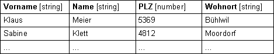
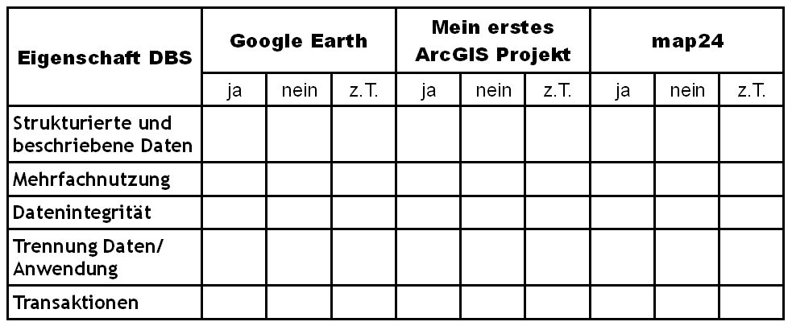

Eigenschaften von Datenbanksystemen
Datenbanksysteme haben eine Reihe wichtiger Eigenschaften, die nun näher betrachtet werden sollen.
Strukturierung
Eine grundsätzliche Eigenschaft des
Datenbankansatzes ist, dass ein Datenbanksystem nicht nur die Daten selbst als
 strukturierten Datenbestand
enthält, sondern auch deren Definition oder Beschreibung. Diese
Beschreibung besteht aus Angaben über den Umfang, die Struktur, die Art und das
Format aller Daten sowie über die Beziehungen der Daten untereinander. Diese
Informationen werden auch
strukturierten Datenbestand
enthält, sondern auch deren Definition oder Beschreibung. Diese
Beschreibung besteht aus Angaben über den Umfang, die Struktur, die Art und das
Format aller Daten sowie über die Beziehungen der Daten untereinander. Diese
Informationen werden auch  Metadaten oder
„Daten-über-Daten“ genannt. Metadaten werden nach vereinbarten Standards
strukturiert abgelegt. Die nachstehende Tabelle soll als einfaches Beispiel
dienen.
Metadaten oder
„Daten-über-Daten“ genannt. Metadaten werden nach vereinbarten Standards
strukturiert abgelegt. Die nachstehende Tabelle soll als einfaches Beispiel
dienen.
- Spalte = Vorname
- Spalte = Name
- Spalte = PLZ
- Spalte = Wohnort
Sie kann als eine Datenbanktabelle aufgefasst werden, falls die Struktur
dieser Tabelle nicht nur für Menschen mit spezifischem Interpretationswissen
implizit festgelegt ist. Durch die
explizite Definition von Bezeichnung
(Name) und Datentyp in einer festen Struktur (Kopfzeile, Datenzeilen) wird diese
Tabelle zur  Relation und kann in eine Datenbank
überführt werden.
Relation und kann in eine Datenbank
überführt werden.

Abbildung 3: Beispiel einer Datenbanktabelle (GITTA 2005)Mehrfachnutzung
Ein Datenbanksystem erlaubt mehreren Benutzern
gleichzeitig den konsistenten
(=widerspruchsfreien) Zugriff auf eine Datenbank. So ist die Beantwortung
unterschiedlicher Fragestellungen auf identischen Daten zur gleichen Zeit ein
zentraler Aspekt eines Informationssystems. Eine solche Mehrfachnutzung erhöht
auch die Wirtschaftlichkeit eines Systems. Die Datenerfassung und -haltung ist
nicht  redundant, das System kann zentralisiert
betreut und die Daten können einfacher aktualisiert werden. Nicht zu
vernachlässigen ist die meistens effizientere Nutzung der oftmals teuren
redundant, das System kann zentralisiert
betreut und die Daten können einfacher aktualisiert werden. Nicht zu
vernachlässigen ist die meistens effizientere Nutzung der oftmals teuren  GeoDaten. Ein Beispiel für Mehrfachnutzung ist
die Reise-Datenbank eines größeren Reisebüros. Die Angestellten verschiedener
Zweigstellen können gleichzeitig auf diese Datenbank zugreifen und Reisen buchen
bzw. verkaufen. Jeder sieht sofort, wie viele Plätze für eine bestimmte Reise
noch erhältlich sind oder ob diese schon ausgebucht ist.
GeoDaten. Ein Beispiel für Mehrfachnutzung ist
die Reise-Datenbank eines größeren Reisebüros. Die Angestellten verschiedener
Zweigstellen können gleichzeitig auf diese Datenbank zugreifen und Reisen buchen
bzw. verkaufen. Jeder sieht sofort, wie viele Plätze für eine bestimmte Reise
noch erhältlich sind oder ob diese schon ausgebucht ist.
Das Konzept der Mehrfachnutzung ermöglicht weiterhin nicht nur gemeinsames Nutzen sondern z.B., je nach Zugangsrechten und Bedürfnissen, eine individuelle Darstellung und Auswertung der Daten. Eine solche Datensicht kann aus einer Teilmenge der gespeicherten Daten oder aus daraus abgeleiteten (nicht explizit gespeicherten) Daten bestehen.
Beispiel: An einer Hochschule werden
Daten über die Studierenden verwaltet. Neben Matrikelnummer, Name, Adresse etc.
werden auch andere Informationen erfasst, wie die Semesterzahl oder die Angabe
darüber, ob die Studierenden spezifische Module wiederholt haben. Diese
Datenbank wird von Personen mit unterschiedlichen Bedürfnissen und
Berechtigungen benutzt.
Klicken Sie auf einen der vier
Buttons, um verschiedene Sichten auf die Datenbank darzustellen.
Datenintegrität
Das Datenbanksystem bzw. das Anwendungsprogamm benötigt keine Kenntnis über die physikalische Datenspeicherung (Kodierung, Format, Speicherort, etc.). Es kommuniziert mit dem Verwaltungssystem einer Datenbank (DBMS) über eine normierte Schnittstelle mittels einer standardisierten Sprache. Den Zugriff auf die eigentlichen Daten und die Metadaten übernimmt das DBMS. Auf diese Weise sind Anwendungen von den Daten vollständig getrennt. Nur so kann die Konsistenz der Datenbank während des Systembetriebs aufrechterhalten. Zusätzlich ermöglicht diese Konzeption eine enorme Flexibilität bezüglich der Nutzung.
 Abbildung 5: Anwendungen bzw. Datenbanksysteme dürfen niemals direkt am Datenbankmanagement vorbei auf die Datenbank zugreifen.
Die Trennung von Anwendungen und Daten ist die wichtigste Grundlage für die Datenintegrität (GITTA 2005)
Abbildung 5: Anwendungen bzw. Datenbanksysteme dürfen niemals direkt am Datenbankmanagement vorbei auf die Datenbank zugreifen.
Die Trennung von Anwendungen und Daten ist die wichtigste Grundlage für die Datenintegrität (GITTA 2005)Die so erzielbare Datenintegrität ist der vielleicht wichtigste Unterschied zwischen einer Datenbanktabelle und einer normalen Tabelle. Ein DBMS (anders als z.B. eine Tabellenkalkulation wie Openoffice Calc) unterstützt bei der Aufgabe, korrekte und widerspruchsfreie („konsistente“) Daten in der Datenbank vorzuhalten.
 Abbildung 6: In derselben Datenbank dürfen keine widersprüchlichen Aussagen stehen. Die gezeigte Datenbank
besteht aus den zwei Tabellen „Wohnstrassen“ und „Strassenplanung“. In der Tabelle „Wohnstrassen“ ist
die Gartenstrasse von 19.00–7.00 mit einem Fahrverbot belegt. In der Tabelle „Strassenplanung“ jedoch
bestehen für die Gartenstrasse keine Einschränkungen. Dies ist ein Beispiel für einen Widerspruch, wie
er in einer Datenbank nicht vorkommen darf. (GITTA 2005)
Abbildung 6: In derselben Datenbank dürfen keine widersprüchlichen Aussagen stehen. Die gezeigte Datenbank
besteht aus den zwei Tabellen „Wohnstrassen“ und „Strassenplanung“. In der Tabelle „Wohnstrassen“ ist
die Gartenstrasse von 19.00–7.00 mit einem Fahrverbot belegt. In der Tabelle „Strassenplanung“ jedoch
bestehen für die Gartenstrasse keine Einschränkungen. Dies ist ein Beispiel für einen Widerspruch, wie
er in einer Datenbank nicht vorkommen darf. (GITTA 2005)Transaktionen
Eine sogenannte Transaktion ist immer ein
vollständig ausgeführtes Set von Aktionen in einer Datenbank. Transaktionen
werden nur vom DBMS abgearbeitet, damit die Datenbank sicher und nachvollziehbar
von einem konsistenten Zustand wieder in einen konsistenten (widerspruchsfreien)
Zustand ( Datenpersistenz) überführt
werden kann. Dazwischen sind die Daten zum Teil zwangsläufig inkonsistent.
Transaktionen sind atomare Datenbankoperationen, d.h. innerhalb einer
Transaktion werden entweder alle Aktionen oder keine durchgeführt. Tritt ein
Fehler während einer Transaktion auf so wird das Zurücksetzen auf den letzten
konsistenten Zustand veranlasst(
Datenpersistenz) überführt
werden kann. Dazwischen sind die Daten zum Teil zwangsläufig inkonsistent.
Transaktionen sind atomare Datenbankoperationen, d.h. innerhalb einer
Transaktion werden entweder alle Aktionen oder keine durchgeführt. Tritt ein
Fehler während einer Transaktion auf so wird das Zurücksetzen auf den letzten
konsistenten Zustand veranlasst( Rollback).
Rollback).
Ein leicht verständliches Beispiel einer Datenbank-Transaktion ist das
Umbuchen einer Summe Geld von einem Konto auf ein anderes Konto. Die Abbuchung
des Geldes von einem Konto und die Gutschrift auf dem anderen Konto sind
zusammen eine konsistente Transaktion, die atomar ist. Eine Abbuchung oder
Gutschrift jeweils alleine würde zu einem inkonsistenten Zustand der berührten
Konten (Datenbankeinträge) führen. Nach Abschluss der Transaktion (Abbuchung und
Gutschrift) wird die Änderung an beiden Konten dauerhaft ( Commit). Vergegenwärtigen Sie sich diesen
Zusammenhang mit Hilfe der nachfolgenden interaktiven Grafik.
Commit). Vergegenwärtigen Sie sich diesen
Zusammenhang mit Hilfe der nachfolgenden interaktiven Grafik.
GI-Anwendungen vor dem Hintergrund von Datenbanksystemen
Wir haben bislang zahlreiche Beispiele für einzelne oder auch mehrere der genannten Eigenschaften von Datenbanksystemen in unseren Beispielen kennengelernt. Es ist offensichtlich, dass moderne GI-Systeme diese Konzepte integrieren müssen. Bewerten Sie einige der Ihnen bislang bekannten GIS anhand der Tabelle hinsichtlich der Erfüllung der Bedingungen für Datenbanksysteme:

Abbildung 9: Bewertungsmatrix bezüglich der Realisation von Datenbankeigenschaften (GIS.MA 2009)Bearbeiten Sie...
- Gibt es Ihrer Meinung nach einen Unterschied bezüglich der Datenkonsistenz einer Datenbank je nachdem ob Sie alleine Zugang besitzen oder Sie mit mehreren Nutzern gleichzeitig einen Datensatz bearbeiten müssen?
- Entwerfen Sie ein einfaches Ablaufschema das eine Transaktion allgemein beschreibt.